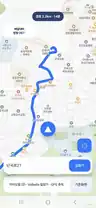

DESTINATION
목적지 위치 확인
지도에서 현재 위치와 목적지를 확인하고 길찾기를 시작하는 화면입니다.
현재 위치를 따라가고, 운행 방향에 맞춰 지도를 돌리고, 다음 회전과 남은 거리 같은 정보를 고정된 안내 영역에서 보여주는 것을 목표로 합니다.
GPS 위치를 따라 지도가 이동해 운행 중 현재 위치를 다시 찾는 동작을 줄입니다.
이동 방향과 센서 정보를 바탕으로 지도를 돌려 진행 방향을 화면 위쪽 기준으로 보기 쉽게 합니다.
상단·중간 안내 영역에서 다음 회전 방향과 거리를 확인할 수 있도록 구성합니다.
목적지까지 남은 거리와 경로 진행 상태를 주행 화면에서 빠르게 확인합니다.
골목과 목적지 접근 구간을 보기 쉽도록 실제 휴대폰 화면에서 지도 확대 비율을 계속 조정하고 있습니다.
메인폰에서 받은 목적지를 보조폰 배달내비 화면으로 이어주는 연결 구조를 목표로 개발합니다.
직접 빌드해 보조폰에서 확인한 개발·실주행 테스트 화면입니다.
지도에서 현재 위치와 목적지를 확인하고 길찾기를 시작하는 화면입니다.

경로와 남은 거리, 현재 위치를 보조폰에서 확인하는 실제 테스트 화면입니다.
배달내비를 실행하고 위치 권한과 GPS 상태를 확인합니다.
직접 목적지를 입력하거나 짝꿍내비 연동으로 목적지를 전달받습니다.
경로가 표시되면 주행 화면으로 전환해 안내를 확인합니다.
현재위치와 운행방향을 따라 지도와 안내 정보를 확인합니다.
위치 권한과 GPS가 켜져 있는지 확인하고, 실외에서 위치 정확도가 확보될 때까지 잠시 기다립니다.
이동 중 GPS 방향이 안정되는지 확인하고 센서 상태에 따라 잠시 지연될 수 있으므로 실제 도로 방향을 함께 확인합니다.
배달내비보다 먼저 짝꿍내비의 메인폰·보조폰 연결됨 상태와 목적지 전송 여부를 확인합니다.
현재 확대 비율은 실주행 조정 중입니다. 목적지 접근 구간에서는 실제 배달앱 지도와 도로 상황도 함께 확인합니다.